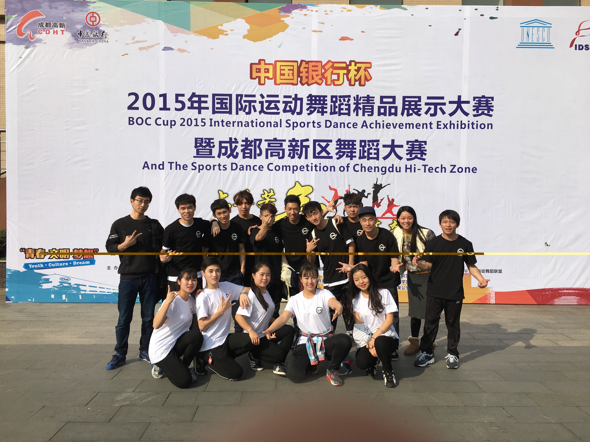
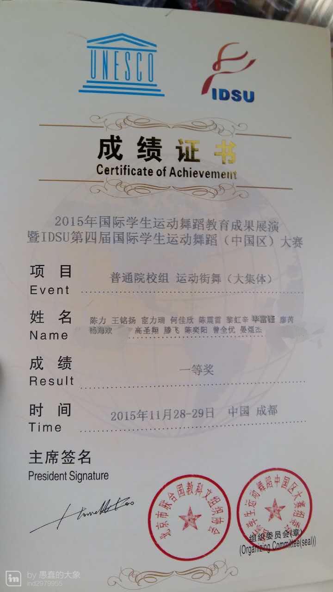

【本网讯】11月29日，由联合国教科文组织（北京）协会、国际运动舞蹈联盟（IDSU）、亚洲运动舞蹈联盟（ADSU）、成都市高新区党工委主办，成都高新区党群工作局、成都体育学院艺术系、电子科技大学、成都市运动舞蹈协会承办的“2015年国际运动舞蹈精品展示大赛暨成都高新区舞蹈大赛颁奖盛典”落下帷幕，为期两天的 “2015年国际运动舞蹈大赛暨成都高新区舞蹈大赛”画下了圆满的句号。
我校街舞队参赛作品《我的未来不是梦》在运动街舞组别中，斩获全国普通高校组第一名的好成绩。我校街舞队的精彩技艺和精神风貌受到联合国教科文组织（北京）协会、国际运动舞蹈联盟（IDSU）、亚洲运动舞蹈联盟（ADSU）的领导和参赛队伍的赞许，队员们纷纷表示将在以后的训练中更加努力，力争为学校取得更好的成绩。
在本次比赛中，来自国内外146支参赛队伍、近4000名运动员参加本次大赛，其中高校组的队伍有80多支，本次大赛是继2012年首届国际运动舞蹈大赛总决赛，2013、2014年第二届和第三届国际运动舞蹈大赛总决赛后，在成都成功举办的第四届国际运动舞蹈大赛，国际运动舞蹈大赛给予广大热爱运动舞蹈艺术的人民群众一个交流和展示的平台，全国各地及国外怀揣着对运动舞蹈的热爱与激情的舞者们，汇聚在此地，呈现出精湛的技术。舞者们精心的编排，以及精彩的表演，以运动倡导健康之风，以舞蹈彰显和平之美。
